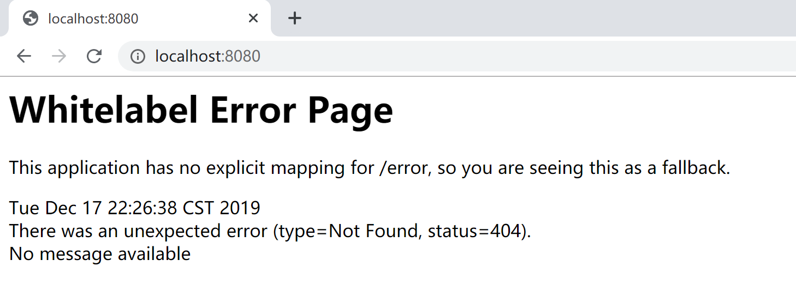
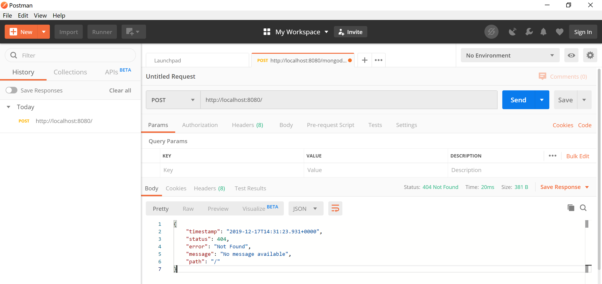
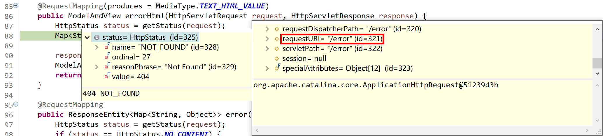
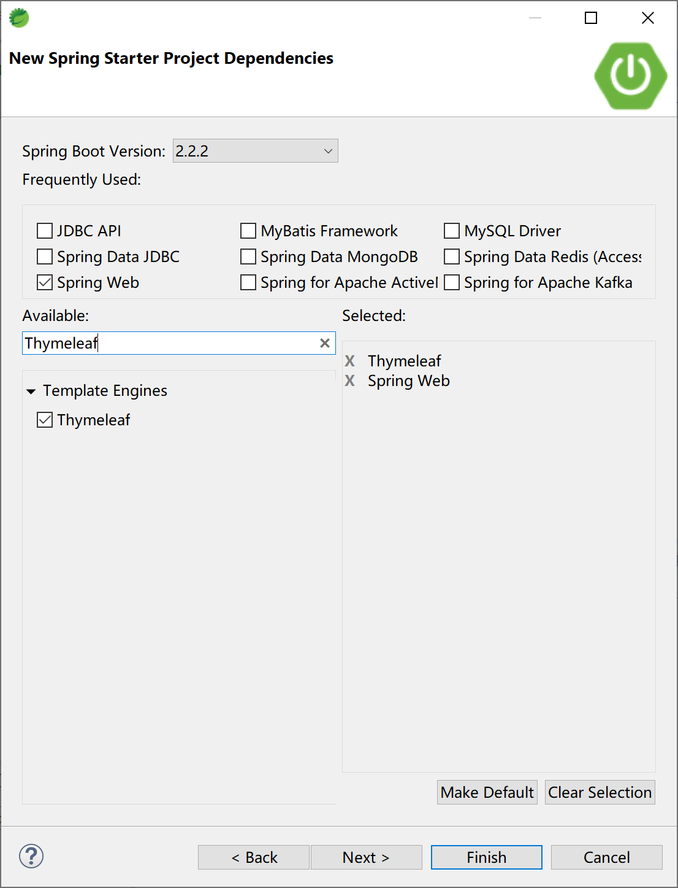
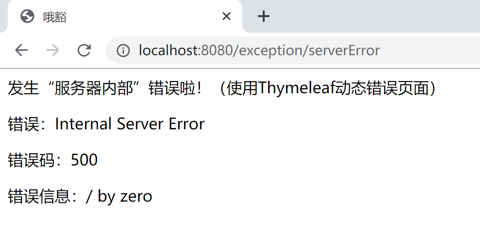
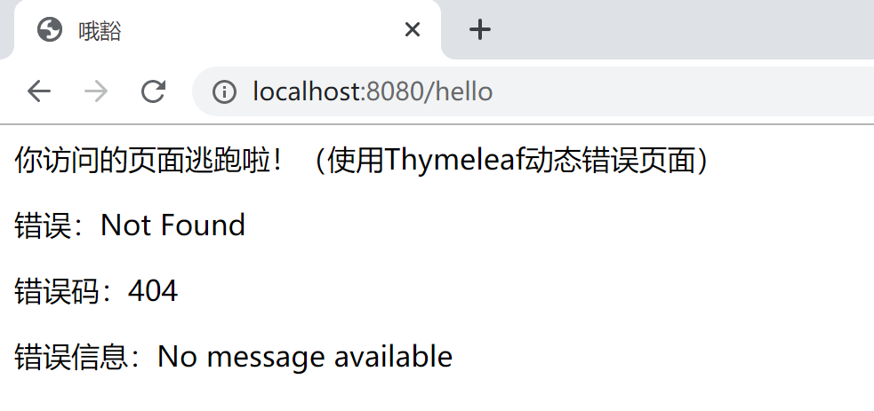
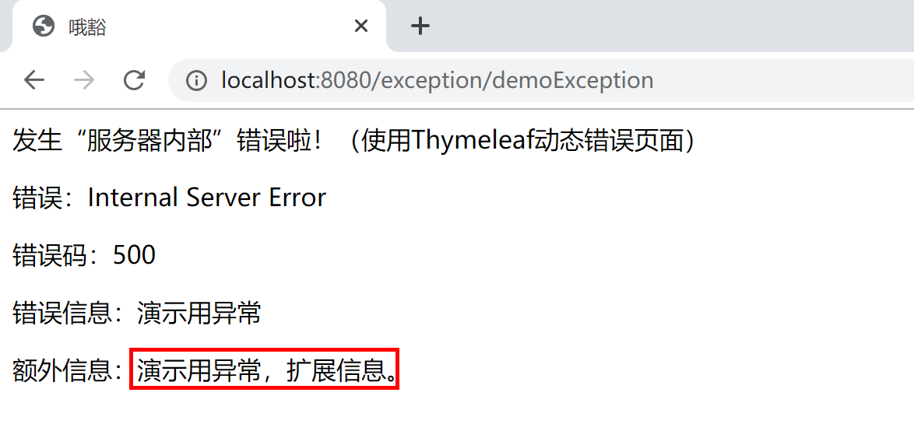
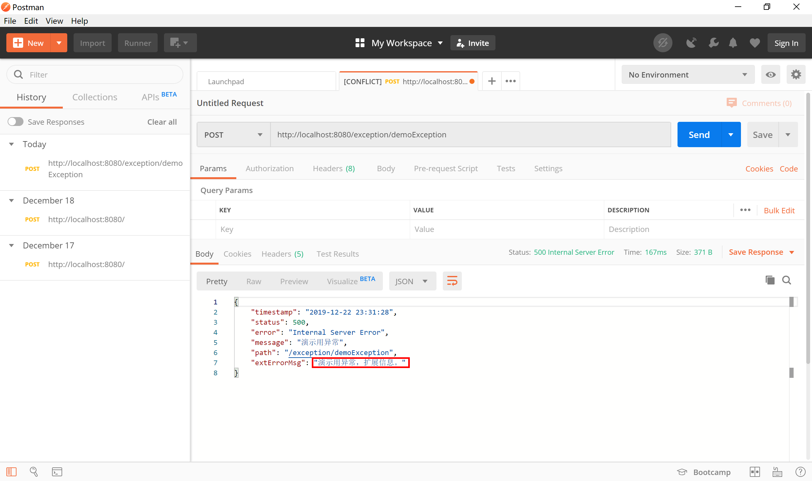

10.2 Spring Boot中全局异常的使用
在实际工作中，我们大部分时间在使用Spring Boot开发Web应用（当然，最经常使用到的是框架是Spring MVC）。由于和用户多有交互，所以在请求的过程中，发生错误异常是很常见的。Spring Boot为我们提供了一套默认的异常/错误处理机制，帮助我们来处理交互过程中的异常/错误。
官方文档，对错误处理的描述如下：
By default, Spring Boot provides an
/errormapping that handles all errors in a sensible way, and it is registered as a “global” error page in the servlet container. For machine clients, it produces a JSON response with details of the error, the HTTP status, and the exception message. For browser clients, there is a “whitelabel” error view that renders the same data in HTML format (to customize it, add aViewthat resolves toerror). To replace the default behavior completely, you can implementErrorControllerand register a bean definition of that type or add a bean of typeErrorAttributesto use the existing mechanism but replace the contents.
例如，当我们通过浏览器访问一个不存在的url地址时，服务器就产生一个“404 Not Found”错误，Spring Boot提供的默认映射“/error”就起作用了，在这个请求中处理“404 Not Found”然后通过为该请求配置的默认全局错误页面来展示错误信息。
Spring Boot默认在没有找到对应的Controller处理器方法（handler not found）的情况下，不会直接报错，而是通过向Servlet容器（如Tomcat）设置错误报告属性，然后Servlet容器发现错误（例如，http status=404），就查找默认“/error” 这个路径，Spring Boot就接管后续全局统一异常处理。

如果是通过Postman之类的工具以Post方式访问，Spring Boot的默认全局异常处理机制则会返回一段json信息。

10.2.1 Spring Boot默认全局异常
在Spring Boot提供的org.springframework.boot.autoconfigure.web.servlet.error.ErrorMvcAutoConfiguration类通过自动配置错误处理Bean，为Web容器提供了默认的全局异常处理机制。
...
@Bean//1.DefaultErrorAttributes
@ConditionalOnMissingBean(value = ErrorAttributes.class, search = SearchStrategy.CURRENT)
public DefaultErrorAttributes errorAttributes() {
return new DefaultErrorAttributes(this.serverProperties.getError().isIncludeException());
}
@Bean//2.BasicErrorController
@ConditionalOnMissingBean(value = ErrorController.class, search = SearchStrategy.CURRENT)
public BasicErrorController basicErrorController(ErrorAttributes errorAttributes,
ObjectProvider<ErrorViewResolver> errorViewResolvers) {
return new BasicErrorController(errorAttributes, this.serverProperties.getError(),
errorViewResolvers.orderedStream().collect(Collectors.toList()));
}
@Bean//3.ErrorPageCustomizer
public ErrorPageCustomizer errorPageCustomizer(DispatcherServletPath dispatcherServletPath) {
return new ErrorPageCustomizer(this.serverProperties, dispatcherServletPath);
}
...
@Configuration(proxyBeanMethods = false)
static class DefaultErrorViewResolverConfiguration {
private final ApplicationContext applicationContext;
private final ResourceProperties resourceProperties;
DefaultErrorViewResolverConfiguration(ApplicationContext applicationContext,
ResourceProperties resourceProperties) {
this.applicationContext = applicationContext;
this.resourceProperties = resourceProperties;
}
@Bean//4.DefaultErrorViewResolver
@ConditionalOnBean(DispatcherServlet.class)
@ConditionalOnMissingBean(ErrorViewResolver.class)
DefaultErrorViewResolver conventionErrorViewResolver() {
return new DefaultErrorViewResolver(this.applicationContext, this.resourceProperties);
}
}
@Configuration(proxyBeanMethods = false)
@ConditionalOnProperty(prefix = "server.error.whitelabel", name = "enabled", matchIfMissing = true)
@Conditional(ErrorTemplateMissingCondition.class)
protected static class WhitelabelErrorViewConfiguration {
private final StaticView defaultErrorView = new StaticView();
@Bean(name = "error")//将StaticView（就是Whitelabel错误页面）配置为error
@ConditionalOnMissingBean(name = "error")
public View defaultErrorView() {
return this.defaultErrorView;
}
...
10.2.1.1 DefaultErrorAttributes
其中配置的org.springframework.boot.web.servlet.error.DefaultErrorAttributes类，为我们提供了在页面共享信息的“getErrorAttributes”方法。
@Override
public Map<String, Object> getErrorAttributes(WebRequest webRequest, boolean includeStackTrace) {
Map<String, Object> errorAttributes = new LinkedHashMap<>();
errorAttributes.put("timestamp", new Date());
addStatus(errorAttributes, webRequest);
addErrorDetails(errorAttributes, webRequest, includeStackTrace);
addPath(errorAttributes, webRequest);
return errorAttributes;
}
10.2.1.2 BasicErrorController
其中配置的org.springframework.boot.autoconfigure.web.servlet.error.BasicErrorController类，根据请求头的不同，提供了不同的方法处理默认/error请求。
- 普通html请求使用errorHtml方法，返回error错误页面并携带错误数据。
- 其他的请求（例如Postman发起的请求）使用error方法，返回json数据。
@RequestMapping("${server.error.path:${error.path:/error}}")：这是一个三元写法，如果你在配置文件配置了server.error.path的话，就会使用你配置的异常处理地址，如果没有就会使用你配置的error.path路径地址，如果还是没有，默认使用/error来作为发生异常的处理地址。
@Controller
@RequestMapping("${server.error.path:${error.path:/error}}")//拦截/error请求
public class BasicErrorController extends AbstractErrorController {
...
@RequestMapping(produces = MediaType.TEXT_HTML_VALUE)//处理浏览器请求，返回错误html页面
public ModelAndView errorHtml(HttpServletRequest request, HttpServletResponse response) {
HttpStatus status = getStatus(request);
Map<String, Object> model = Collections
.unmodifiableMap(getErrorAttributes(request, isIncludeStackTrace(request, MediaType.TEXT_HTML)));
response.setStatus(status.value());
ModelAndView modelAndView = resolveErrorView(request, response, status, model);
return (modelAndView != null) ? modelAndView : new ModelAndView("error", model);
}
@RequestMapping//处理“machine clients”请求，例如Postman发起的请求，返回json数据
public ResponseEntity<Map<String, Object>> error(HttpServletRequest request) {
HttpStatus status = getStatus(request);
if (status == HttpStatus.NO_CONTENT) {
return new ResponseEntity<>(status);
}
Map<String, Object> body = getErrorAttributes(request, isIncludeStackTrace(request, MediaType.ALL));
return new ResponseEntity<>(body, status);
}
例如，我们在浏览器中访问了一个不存在的url，Spring MVC将其错误信息封装到DefaultErrorAttributes（由getErrorAttributes方法提供数据），然后将其转发到“/error”请求，由BasicErrorController.errorHtml方法接管处理。

其中的org.springframework.boot.autoconfigure.web.servlet.error.ErrorMvcAutoConfiguration.StaticView类的“render”方法提供的就是我们经常能够看到的“Whitelabel Error Page”页面。
private static class StaticView implements View {
private static final MediaType TEXT_HTML_UTF8 = new MediaType("text", "html", StandardCharsets.UTF_8);
private static final Log logger = LogFactory.getLog(StaticView.class);
@Override
public void render(Map<String, ?> model, HttpServletRequest request, HttpServletResponse response)
throws Exception {
if (response.isCommitted()) {
String message = getMessage(model);
logger.error(message);
return;
}
response.setContentType(TEXT_HTML_UTF8.toString());
StringBuilder builder = new StringBuilder();
Date timestamp = (Date) model.get("timestamp");
Object message = model.get("message");
Object trace = model.get("trace");
if (response.getContentType() == null) {
response.setContentType(getContentType());
}
builder.append("<html><body><h1>Whitelabel Error Page</h1>").append(
"<p>This application has no explicit mapping for /error, so you are seeing this as a fallback.</p>")
.append("<div id='created'>").append(timestamp).append("</div>")
.append("<div>There was an unexpected error (type=").append(htmlEscape(model.get("error")))
.append(", status=").append(htmlEscape(model.get("status"))).append(").</div>");
if (message != null) {
builder.append("<div>").append(htmlEscape(message)).append("</div>");
}
if (trace != null) {
builder.append("<div style='white-space:pre-wrap;'>").append(htmlEscape(trace)).append("</div>");
}
builder.append("</body></html>");
response.getWriter().append(builder.toString());
}
...
10.2.1.3 ErrorPageCustomizer
其中的org.springframework.boot.autoconfigure.web.servlet.error.ErrorMvcAutoConfiguration.ErrorPageCustomizer类，在Spring Boot（Spring MVC）应用启动时，读取server.error.path配置属性，注册ErrorPage，在应用出现异常（比如404）时就能找到对应的页面（/error）进行处理。
private static class ErrorPageCustomizer implements ErrorPageRegistrar, Ordered {
private final ServerProperties properties;
private final DispatcherServletPath dispatcherServletPath;
protected ErrorPageCustomizer(ServerProperties properties, DispatcherServletPath dispatcherServletPath) {
this.properties = properties;
this.dispatcherServletPath = dispatcherServletPath;
}
@Override
public void registerErrorPages(ErrorPageRegistry errorPageRegistry) {
ErrorPage errorPage = new ErrorPage(
this.dispatcherServletPath.getRelativePath(this.properties.getError().getPath()));
//this.properties.getError().getPath()=server.error.path=error(默认值)
errorPageRegistry.addErrorPages(errorPage);
}
@Override
public int getOrder() {
return 0;
}
}
10.2.1.4 DefaultErrorViewResolver
其中的org.springframework.boot.autoconfigure.web.servlet.error.DefaultErrorViewResolver类，完成默认的错误视图解析工作。
@Override
public ModelAndView resolveErrorView(HttpServletRequest request, HttpStatus status, Map<String, Object> model) {
ModelAndView modelAndView = resolve(String.valueOf(status.value()), model);
if (modelAndView == null && SERIES_VIEWS.containsKey(status.series())) {
modelAndView = resolve(SERIES_VIEWS.get(status.series()), model);
}
return modelAndView;
}
private ModelAndView resolve(String viewName, Map<String, Object> model) {
//Spring Boot去找到一个处理错误的页面，例如error/404
String errorViewName = "error/" + viewName;
TemplateAvailabilityProvider provider = this.templateAvailabilityProviders.getProvider(errorViewName,
this.applicationContext);
if (provider != null) {
return new ModelAndView(errorViewName, model);
}
return resolveResource(errorViewName, model);
}
...
10.2.1.5 全局异常处理过程
默认情况下，Web应用一旦出现错误，Spring Boot全局异常体系就接管该错误，并按照如下步骤进行处理：
- 系统启动时ErrorPageCustomizer注册错误处理页面，并准备为异常服务；
- 一但系统出现4xx或者5xx之类的错误，“/error”请求会被BasicErrorController处理，根据请求头的不同，返回页面或json数据；
- 在返回页面的情况下，由DefaultErrorViewResolver解析得到由ErrorPageCustomizer注册的响应页面，如果没有指定页面，BasicErrorController就使用"error"视图；
- "error"视图是由StaticView这个类提供的“Whitelabel Error Page”页面。
10.2.1.6 跟踪代码，加深理解
为了理解Spring Boot在Spring MVC应用中提供的全局异常处理机制，建议读者以调试方式启动Spring Boot应用，通过浏览器访问一个不存在的地址（例如http://localhost:8080/good），跟踪代码，加深理解。
- 在
org.springframework.web.servlet.DispatcherServlet.doDispatch方法处设置断点； - 在
org.apache.catalina.core.StandardHostValve.status方法处设置断点； - 在
org.springframework.boot.autoconfigure.web.servlet.error.BasicErrorController.errorHtml方法处设置断点； - 在
org.springframework.boot.autoconfigure.web.servlet.error.DefaultErrorViewResolver.resolve方法处设置断点；
然后跟踪代码：
- 第1次进入doDispatch方法，是浏览器发起的，观察request的attributes中的值
org.springframework.web.servlet.HandlerMapping.lookupPath=/good，DispatcherType=REQUEST； - 然后进入status方法，tomcat设置statusCode=404，ErrorPage[errorCode=0, location=/error]，然后转发错误请求“/error”；
- 第2次进入doDispatch方法，观察request的dispatcherType=DispatcherType.ERROR，servletPath=/error；匹配的mappedHandler=org.springframework.boot.autoconfigure.web.servlet.error.BasicErrorController.errorHtml；
- 后续就由errorHtml方法接管错误处理了。在
ModelAndView modelAndView = resolveErrorView(request, response, status, model)查找对应的视图（view），我们没有指定视图的情况下返回null，然后在return (modelAndView != null) ? modelAndView : new ModelAndView("error", model)代码处为指定Model为“error”（ModelAndView("error", model)）； - 浏览器得到“Whitelabel Error Page”错误页面。
10.2.2 自定义全局异常
在SpringBoot 统一异常处理的做法主要有两种：一是使用注解ExceptionHandler处理某个特定的异常类，二是实现接口ErrorController或继承扩展AbstractErrorController类（BasicErrorController就继承自这个类）。
本小节使用“Thymeleaf模板引擎+Spring MVC”的Spring Boot应用，来讲解提供自定义错误页面进行如何优雅的全局异常处理。

10.2.2.1 自定义错误页面
在resources/templates下面创建error.html页面，内容如下：
<!DOCTYPE html>
<html xmlns:th="http://www.thymeleaf.org">
<head>
<meta charset="UTF-8">
<title>哦豁</title>
</head>
<body>
发生错误啦！（使用Thymeleaf动态错误页面）
<p th:text="${'错误：'+error}"></p>
<p th:text="${'错误码：'+status}"></p>
<p th:text="${'错误信息：'+message}"></p>
</body>
</html>
如果要细分错误码（如404，500）则在resources/templates/error下创建对应的页面，如500.html，内容如下：
<!DOCTYPE html>
<html xmlns:th="http://www.thymeleaf.org">
<head>
<meta charset="UTF-8">
<title>哦豁</title>
</head>
<body>
发生“服务器内部”错误啦！（使用Thymeleaf动态错误页面）
<p th:text="${'错误：'+error}"></p>
<p th:text="${'错误码：'+status}"></p>
<p th:text="${'错误信息：'+message}"></p>
</body>
</html>
404.html：
<!DOCTYPE html>
<html xmlns:th="http://www.thymeleaf.org">
<head>
<meta charset="UTF-8">
<title>哦豁</title>
</head>
<body>
你访问的页面逃跑啦！（使用Thymeleaf动态错误页面）
<p th:text="${'错误：'+error}"></p>
<p th:text="${'错误码：'+status}"></p>
<p th:text="${'错误信息：'+message}"></p>
</body>
</html>
通过一个Controller方法，内部除0发生异常，来测试500错误：
package com.example.exception.foo.controller;
import org.springframework.web.bind.annotation.RequestMapping;
import org.springframework.web.bind.annotation.RestController;
@RestController
@RequestMapping("/exception/")
public class TestController {
@RequestMapping("/serverError")
public String serverError() {
double d = 100/0;
return "error" + d;
}
}
浏览器访问http://localhost:8080/exception/serverError，由500.html响应的效果如下：

浏览器访问http://localhost:8080/hello，由404.html响应的效果如下：

10.2.2.2 扩展DefaultErrorAttributes类
如果我们需要在错误发生的时候，生成（或提供）更多的信息，可以扩展Spring Boot提供的DefaultErrorAttributes类，在其中添加额外的错误信息。
package com.example.exception.component;
import java.util.Map;
import org.springframework.boot.web.servlet.error.DefaultErrorAttributes;
import org.springframework.stereotype.Component;
import org.springframework.web.context.request.WebRequest;
@Component
public class ExErrorAttributes extends DefaultErrorAttributes {
@Override
public Map<String, Object> getErrorAttributes(WebRequest webRequest, boolean includeStackTrace) {
Map<String, Object> errorAttributes = super.getErrorAttributes(webRequest, includeStackTrace);
// 从ExExceptionHandler中传递过来的额外异常信息，放入到errorAttributes中，供后续错误处理页面用。
String msg = (String) webRequest.getAttribute("extErrorMsg", 0);
errorAttributes.put("extErrorMsg", msg);
return errorAttributes;
}
}
10.2.2.3 自定义异常处理类
创建一个异常类DemoException，用来演示抛出异常。
package com.example.exception.component;
public class DemoException extends RuntimeException {
private static final long serialVersionUID = -9185062164416168469L;
public DemoException() {
super("演示用异常");
}
}
自定义一个异常处理类，专门处理DemoException异常：
package com.example.exception.component;
import javax.servlet.http.HttpServletRequest;
import org.springframework.web.bind.annotation.ControllerAdvice;
import org.springframework.web.bind.annotation.ExceptionHandler;
@ControllerAdvice
public class ExExceptionHandler {
@ExceptionHandler(DemoException.class)
public String handleException(Exception e, HttpServletRequest request) {
request.setAttribute("javax.servlet.error.status_code", 500);
request.setAttribute("extErrorMsg", "演示用异常，扩展信息。");
return "forward:/error";
}
}
102.2.4 测试
在控制器TestController中添加一个方法，其内部抛出DemoException，测试。
package com.example.exception.foo.controller;
import org.springframework.web.bind.annotation.RequestMapping;
import org.springframework.web.bind.annotation.RestController;
import com.example.exception.component.DemoException;
@RestController
@RequestMapping("/exception/")
public class TestController {
@RequestMapping("/demoException")
public String serverError() {
throw new DemoException();
}
@RequestMapping("/serverError")
public String serverError2() {
double d = 100/0;
return "error" + d;
}
}
打开浏览器访问http://localhost:8080/exception/demoException，验证自定义异常的处理效果。

使用Postman发起请求，同样能够得到期望的异常信息。

本小节示例项目代码：
https://github.com/gyzhang/SpringBootCourseCode/tree/master/spring-boot-exception